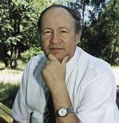
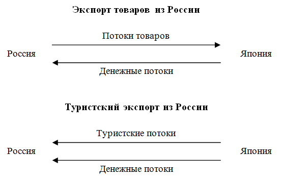
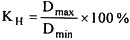
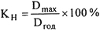
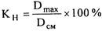
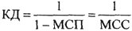

Валерий Александрович Квартальнов –
основатель и первый ректор Российской международной академии туризма, профессор, доктор исторических и
педагогических наук, действительный член РАЕН, Герой Социалистического Труда
(1942 -2003)
«Экономические основы туристской деятельности»
(Глава 10 из учебника «ТУРИЗМ» – М.: Финансы и статистика, 2001)
§ 1. Сущность и экономическое содержание туризма
В соответствии с Федеральным законом "Об основах туристской деятельности в Российской Федерации" туризм -
это временные выезды (путешествия) граждан Российской Федерации, иностранных граждан и лиц без гражданства с
постоянного места жительства в оздоровительных, познавательных, профессионально-деловых, спортивных, религиозных и
иных целях без занятия оплачиваемой деятельностью в стране (месте) временного пребывания.
Туризм как товар реализуется в форме услуг. Услуга туризма, как и услуга вообще, есть действие определенной
потребительской стоимости, выражающееся в полезном эффекте, который удовлетворяет ту или иную человеческую
потребность. При этом услуга может быть оказана либо вещью, т. е. при помощи товара, либо в процессе функционирования
самого живого труда. Указанные два способа производства услуг обусловливают и два вида самих услуг: материальные
(производственные), опосредованные вещью, и нематериальные (непроизводственные), не связанные с материальными
продуктами, производство которых неотделимо от их потребления.
Тур представляет собой комплекс различных услуг (размещение, питание, транспортные услуги, бытовые, туристские,
экскурсионные и др.), объединенных на основе главной цели путешествия и предоставляемых на определенном маршруте в
определенный срок.
Кроме услуг, туристы могут покупать товары туристского назначения. Совокупность услуг и товаров туристского
назначения образует понятие "туристский продукт". Турпродукт включает:
- туры, объединенные по целенаправленности (познавательные, оздоровительные и т. п.); - туристско-экскурсионные услуги
различных видов (размещение, питание, транспортные услуги и т. д.); - товары туристско-сувенирного назначения (карты,
открытки, сувениры и др.).
Туризм можно импортировать в страну и экспортировать из нее.
Расходы туристов из других регионов представляют собой вклады в экономику данного принимающего региона. Так,
туристы из Японии, путешествуя по России, получают свои доходы преимущественно на родине. И расходуя деньги в России,
они вкладывают их в экономику нашей страны. Таким образом, расходы иностранцев в стране в туристских целях
представляют собой для России туристский экспорт. Въезжая в данную страну, туристы приобретают туристский опыт и
увозят с собой незабываемые впечатления от поездки.
Итак, туристский экспорт - это вывоз из страны туристских впечатлений, который сопровождается одновременным ввозом
туристом денег в данную страну. Туристский импорт - это ввоз в страну туристских впечатлений, который сопровождается
одновременным вывозом туристом денег из данной страны.
Рис. 3.1 наглядно иллюстрирует данный подход. Когда туристы из России совершают путешествие в Японию, это
становится туримпортом в экономику России. Деньги японских туристов, потраченные в России, являются туримпортом для
японской экономики.
При туристском экспорте направление денежного потока совпадает с направлением потока туристов, тогда как при
экспорте товаров данные потоки направлены противоположно (см. рис. 3.1). Когда поток платежей идет в Россию, значит,
что-то было экспортировано: туристский опыт или товары. Денежные потоки в обоих случаях идут в одном направлении.

Рис. 3.1. Экономическое сравнение товарных и туристских потоков
В настоящее время старое понятие "отрасль" постепенно размывается. Для рыночной экономики характерно не
столько развитие обособленных отраслей, сколько функционирование диверсифицированных межотраслевых комплексов. Так как
в туризме производятся и предметы потребления (пища), и услуги (размещение в гостинице), то можно сделать вывод, что
туризм - это диверсифицированный межотраслевой комплекс социально-бытовой инфраструктуры, который имеет
производственные и непроизводственные функции и представляет собой туристскую индустрию. Хозяйственный процесс,
протекающий в отрасли туризма, является производственно-обслуживающим процессом.
Туристская индустрия - это совокупность гостиниц и иных средств размещения, средств транспорта, предприятий
общественного питания, средств развлечения, объектов познавательного, делового, оздоровительного и другого назначения,
организаций, осуществляющих туроператорскую и турагентскую деятельность, а также учреждений, предоставляющих
экскурсионные услуги и услуги гидов-переводчиков.
Необходимо обеспечить предоставление туристам качественных туристских услуг, а также дальнейшее развитие туристской
индустрии. Именно поэтому в туризме приоритетным становится поиск более эффективного использования относительно
ограниченных ресурсов, что и является одной из задач экономической науки.
Экономика туризма представляет собой систему отношений, возникающих в сфере туризма в процессе производства,
распределения, обмена и потребления результатов туристской деятельности.
Экономика туристской фирмы - это совокупность факторов производства, фондов обращения и нематериальных активов,
доходов (прибыли), полученных в результате реализации туристского продукта и оказания различных других услуг
(выполненных работ).
Стоимостная оценка активов и доходов туристской фирмы характеризует уровень и масштабы ее развития. Последнее
зависит от умения найти оптимальное соотношение между используемыми ресурсами, количеством и качеством реализованного
туристского продукта, с одной стороны, и объемом реализации турпродукта и прибылью от его реализации - с другой.
§ 2. Экономические и финансовые показатели
Становление и развитие туризма как отрасли характеризуются системой определенных экономических показателей, которые
отражают количественный объем реализации туристских услуг и их качественную сторону.
Система показателей развития туризма для региона (страны) включает:
- объем туристского потока; - среднюю величину туристских расходов в сутки; - состояние и развитие
материально-технической базы; - показатели финансово-экономической деятельности туристской фирмы; - показатели
развития международного туризма.
Туристский поток - это постоянное прибытие в страну туристов. Объемы туристских потоков характеризуются следующими
показателями: общее число туристов; число туродней; средняя продолжительность пребывания туристов в стране (регионе).
Для расчета числа туродней необходимо умножить число посетителей на среднюю продолжительность (в днях) пребывания
одного туриста в стране (регионе). Информация о туроднях важна при планировании общественной инфраструктуры и
материально-технической базы туризма. Таким образом, туродни (Д) - это наиболее важная информация для специалистов,
работающих в туризме:
Д = Ч x tcp
где Ч - число туристов; tcp - среднее число дней, проведенных в регионе одним туристом.
Когда получены эти данные, нетрудно оценить предполагаемые расходы каждого туриста за сутки. Но данные о расходах
получатся в лучшем случае приблизительные и должны использоваться с осторожностью. Статистика по данному показателю
обычно скрыта, а количество денег, потраченное во время отдыха, часто забывается туристом. Тем не менее местным
властям и широкой общественности суммарные расходы путешественников в туристском регионе представляются наиболее
понятными и впечатляющими данными. Величина суммарных туристских расходов (Pj;) в данном регионе определяется
следующим образом:
Р∑ = Д х Рcp
где Рcp - средние расходы туриста за сутки.
Однако туристский поток - явление неравномерное. Поэтому были выведены коэффициенты неравномерности туристского
потока (Кн), которые рассчитываются тремя способами:
1) 
2) 
3) 
где Dmax, Dmin - число туродней в месяце максимального и минимального туристского потока соответственно, чел.-дней;
Dгод, Dсм - годовое и среднемесячное число туродней соответственно, чел.-дней.
Показатели, характеризующие состояние и развитие материально-технической базы туризма, определяют ее мощность в
данной стране (регионе). К ним относятся: коечный фонд гостиниц и других средств размещения; число мест на
предприятиях питания, обслуживающих туристов; число мест на предприятиях развлечений (аквапарки, театры и т. д.),
отведенных для туристов, и т. п.
Мощность коечного фонда определяется по формуле
Мк = Kг x 365 + Kc x tc
где Мк - мощность коечного фонда, ед.;
Kг - число койко-мест круглогодичного использования;
Kc - число койко-мест сезонного использования;
tc - число дней сезонного использования.
Так, в Санкт-Петербурге база размещения туристов насчитывает в настоящее время 142 объекта (включая курорты) общей
вместимостью 38,2 тыс. мест. По подсчетам специалистов, число койко-мест круглогодичного использования составляет 15,1
тыс., число койко-мест сезонного использования -36,9 тыс., а число дней "высокого сезона" приблизительно
составляет 60 дней. Следовательно, мощность коечного фонда Санкт-Петербурге равна 7,7255 млн.
Показатели финансово-экономической деятельности турфирмы включают:
- объем реализации туристских услуг или выручку от реализации услуг туризма; - показатели использования рабочей силы
(производительность труда, уровень расходов на оплату труда и пр.); - показатели использования производственных фондов
(фондоотдача, оборачиваемость оборотных средств); - себестоимость услуг туризма; - прибыль; - рентабельность; -
финансовые показатели (платежеспособность, ликвидность, финансовая устойчивость, валютная самоокупаемость и др.).
Отдельно выделяются показатели, характеризующие состояние и развитие международного туризма:
- число туристов, посетивших зарубежные страны (определяется по числу пересечений государственной границы); - число
туродней по иностранным туристам; - суммарные денежные затраты, произведенные туристами за время зарубежных поездок.
Все вышеперечисленные показатели имеют определенное влияние на регион, в котором развивается туристская отрасль.
Развитие туризма и увеличение объема услуг туризма требуют взвешенного подхода, так как очень высоки социальные
последствия принимаемых решений.
§ 3. Прямое и косвенное влияние развития туризма на экономику региона
Туризм оказывает существенное влияние на экономику и развитие региона, способствуя притоку валюты в страну,
созданию новых рабочих мест, улучшению инфраструктуры и т. д. Для получения максимальной выгоды от туризма каждое
государство разрабатывает туристскую политику, которая является одним из видов социально-экономической политики
государства.
Туристская политика государства - это совокупность форм, методов и направлений воздействия государства на
функционирование сферы туризма для достижения конкретных целей сохранения и развития социально-экономического
комплекса. Основные направления туристской политики России:
- защита прав путешествующих; - защита интересов производителей отечественного турпро-дукта; - всемерная поддержка
внутреннего и въездного туризма, которая может проявляться в форме:
а) прямых инвестиций в формирование туристской инфраструктуры; б) научного и рекламно-информационного обеспечения
продвижения национального турпродукта на мировом рынке; в) налоговых и таможенных льгот, стимулирующих приток
инвестиций.
Туристская политика государства базируется на стратегии и тактике.
Туристская стратегия - выработка общей концепции развития и целевых программ, для реализации которых требуется
время и большие финансовые ресурсы.
Туристская тактика - конкретные меры и приемы достижения поставленной цели в конкретных условиях.
Например, Указом Президента РФ от 22 декабря 1995 г. № 1284 была одобрена концепция реорганизации и развития
туризма в Российской Федерации, которую можно считать примером стратегии России в области туризма.
Главная цель концепции - создание современного высокоэффективного и конкурентоспособного туристского комплекса,
обеспечивающего широкие возможности для обслуживания российских и зарубежных граждан, а также значительный вклад в
развитие экономики страны. Для реализации этой цели предлагается целый ряд мер (туристская тактика), среди которых:
создание нормативно-правовой базы развития туризма, соответствующей международной практике; формирование экономических
механизмов стимулирования развития иностранного и внутреннего туризма, привлечения инвестиций в эту сферу; введение
жесткой системы сертификации и лицензирования туристской деятельности и т. п.
Итак, любое государство, развивающее туризм, стремится достичь от него максимальной экономической эффективности.
Экономическая эффективность туризма означает получение выигрыша (экономического эффекта) от организации туризма в
масштабах государства, туристского обслуживания населения региона, производственно-обслуживающей деятельности
туристской фирмы.
Туризм как торговлю услугами на мировом рынке можно назвать невидимым экспортом, вносящим соответствующий вклад в
платежный баланс страны.
Положительным явлением считается тот факт, когда сумма ввоза туристами валюты превышает сумму вывоза валюты.
В настоящий период, когда российский рубль падает по отношению к доллару и другим валютам, доллар в России обретает
значительно большую покупательную способность, чем где-либо еще. Это, несомненно, должно привлекать иностранных
туристов и повышать туристский экспорт, что, в свою очередь, способствует увеличению валового национального продукта
(ВНП). Усилия по привлечению иностранных туристов в Россию имеют некоторое влияние на ситуацию платежного баланса.
Например, гостинично-туристская отрасль в Москве дает столичному бюджету около 10 % доходов. Фирмы, обслуживающие
туристов из-за рубежа, стимулируют продажу сопутствующих товаров, материально помогая национальной экономике.
Ситуация баланса платежей оказывает прямое влияние на ВНП России, величина которого определяется по формуле:
BHП = C + I + G + (x - m),
где С - расходы потребителей; I - инвестиции; G - расходы правительства; х - экспорт; m - импорт.
Естественно, что если импорт превышает экспорт, то ВНП будет иметь меньшее значение. Поэтому для российской
экономики выгоднее привлекать больше туристов в нашу страну и поощрять их тратить здесь больше денег, чем отправлять
российских граждан путешествовать за границу.
Прямое влияние туризма на экономику страны или региона - это результат доходов туриста на покупку услуг и товаров
туризма. Прямое влияние понимается как результат вклада денег туристами в туристские предприятия, материальное
обеспечение работников туризма и создание новых рабочих мест.
Расходы туристов повышают доход туристского региона, что в свою очередь ведет к цепочке "расходы - доходы -
расходы" и т. д. до тех пор, пока эти связи не замыкают цепочку. Таким образом, влияние первичного дохода
вследствие туристских расходов сложно переоценить, так как с ним связаны последующие циклы туристских расходов.
Кроме прямого влияния туристских расходов на развитие региона существует также косвенное влияние, или "эффект
мультипликатора"1, который вступает в силу по мере циркуляции туристских расходов в регионе.
Действие мультипликатора дохода от туризма можно продемонстрировать на следующем условном примере. Группа
иностранных туристов, путешествуя по Валдаю, тратит на покупку товаров и услуг определенную сумму. Доход
турпредприятий - это их выручка от продажи туристам услуг и товаров. Доход региона - это налоги, полученные с этой
выручки и оставляемые в распоряжении региона.
Деньги туристов начинают полностью работать на экономику региона, когда туристская фирма покупает местные
(региональные) товары и услуги. Продавцы этих товаров и услуг, получив деньги от туристов, выплачивают из них
заработную плату своим работникам, которые, в свою очередь, тратят их на покупку товаров, оплату услуг и т. д. Однако
если работники, получив зарплату, тратят ее на приобретение импортных товаров или отдых за рубежом, то цикл замыкается
и происходит утечка денежных средств из региона.
Сочетание прямого и косвенного влияния схемы расходов туристов определяет влияние на местную экономику в целом.
Обычно не весь доход, полученный в каждом цикле расходов туристов, бывает потрачен. Некоторая часть его откладывается,
а другая тратится за пределами данного региона. Чем больше доля дохода, потраченная в пределах региона, тем больше
эффект мультипликатора. Способность удерживать турдоход в пределах региона зависит от экономической замкнутости района
и самостоятельности местной экономики. Если местная экономика способна производить товары и услуги, которые пользуются
спросом у туристов, то эффект мультипликатора будет очень значителен. Чем больше товаров импортируется из других
регионов, тем меньше эффект мультипликатора.
Из вышесказанного можно сделать вывод: эффект мультипликатора - это количество раз, которое деньги, вложенные
туристами в местную экономику, были фактически потрачены в принимающем регионе. Этот коэффициент можно назвать также
коэффициентом доходов, так как потраченные туристами деньги прямо или косвенно становятся доходами местного населения.
Теоретически эффект мультипликатора в туризме неоспорим, но на практике возникают трудности с его учетом. Западная
экономическая наука по проблемам туризма только начинает разрабатывать методику учета и расчета вклада отрасли в
экономику страны.
Помимо эффекта мультипликатора есть сопутствующие экономические явления. Растущие затраты туристов вызывают
необходимость в дополнительной рабочей силе, что выражается коэффициентом занятости. По мере расширения туристского
региона совершенствуется его инфраструктура, идет строительство новых зданий и сооружений. Следовательно, можно
рассчитать коэффициент дохода. Рассмотрим эти коэффициенты более подробно.
Коэффициент занятости. Количество имеющихся и вновь создаваемых рабочих мест - один из важнейших показателей вклада
отрасли в экономику. Наиболее исследованная категория занятых в туризме - в гостиничном и курортно-санаторном
хозяйстве. Косвенная же занятость, создаваемая туризмом в настоящее время, может быть оценена очень приблизительно.
Коэффициент занятости различен по регионам и зависит от их экономической базы. Если коэффициент занятости для страны
составляет 1,13, это означает, что страна может обеспечить трудоустройство дополнительно 0,13 человек на каждого
напрямую работающего в обслуживании экспортного туристского спроса. А если данный коэффициент составляет, предположим,
2,63, то страна обеспечивает рабочими местами приблизительно 1,63 человека на каждого уже работающего в индустрии. В
целом же коэффициент занятости страны изменяется прямо пропорционально численности населения или общему количеству
трудоустроенного населения. По мере роста населения в стране возрастает и значение коэффициента занятости.
Коэффициент дохода. Занятость предполагает доход, который стимулирует экономику региона в процессе его развития.
Значительность этого стимулирования зависит от некоторых факторов. Если использовать в качестве примера отель, то его
администрации необходимо выбрать один из двух способов распределения прибыли: потратить прибыль на товары и услуги или
отложить часть прибыли. Экономисты называют эти способы маржинальной склонностью к потреблению (МСП) или маржинальной
склонностью к сбережению (МСС) - оттоком денег из местной экономики. Отток маржинальных (дополнительных) фондов из
местной экономики может производиться двумя путями: они могут быть отложены или могут быть использованы на
приобретение импортных товаров. В любом случае данные действия способствуют оттоку фондов и не стимулируют местную
экономику.
Основным объективным фактором, определяющим уровень потребления, является доход, поэтому объемы потребления прямо
пропорциональны величине доходов. Субъективная склонность к потреблению может быть средней и предельной
(маржинальной). Средняя склонность к потреблению людей или туристских предприятий выражается отношением потребляемой
части дохода ко всему доходу. Предельная склонность к потреблению выражается отношением изменения в потреблении к тому
изменению в доходе, которое его вызвало.
Но и человек, и предприятие не только потребляют, но и сберегают. Сбережения - это часть дохода, которая не
потребляется. Склонность к сбережению бывает средней и предельной (маржинальной). Средняя склонность к сбережению
выражается отношением сберегаемой части дохода ко всему доходу. Предельная склонность к сбережению выражается
отношением любого изменения в сбережениях к тому изменению в доходе, которое его вызвало.
Если валовой доход туристского предприятия распадается на потребление и сбережение, то прирост потребления плюс
прирост сбережения всегда равны приросту дохода. В этих условиях сумма маржинальной склонности к потреблению и
маржинальной склонности к сбережению равна единице:
МСС + МСП = 1;
МСП = 1 - МСС;
МСС = 1 – МСП.
Чтобы понять суть коэффициента дохода (КД), надо приблизительно рассчитать, какая доля денег туристов, получаемая
туристским регионом, тратится и какая доля откладывается (утечка). Коэффициент дохода можно рассчитать по формуле:

Рассмотрим это на примере. Предположим, что общие затраты туристов в регионе составили $1000, а маржинальная
склонность к потреблению равна 1/2. Схема расходов проходит 7 этапов в год:
$1000 + [1/2 х 1000] + [(1/2)2 х 1000] + [(1/2)3 х1000] + + [(1/2)4 х 1000] + [(1/2)5 х1000] + [(1/2)6 х 1000] + +
[(1/2)' х 1000] = $1000 + 500 + 250 + 125 + 62,5 + 31,25 + + 15,63 + 7,81 "$2000.
Произведем вычисления:
1 / (1 - 1/12) х $1000 = 2 х $1000 = $2000
Таким образом, первоначальная сумма в $1000 туристских расходов оборачивается $2000 дохода принимающего туристского
региона.
Утечка денежных средств. Утечка - это комбинация сбережений (деньги, которые не предоставляются в заем) и импорта
(деньги, которые тратятся на туристские потребности за пределами принимающего государства). Если тратятся деньги за
рубежом на импортные товары, то очевидно, что это не стимулирует местную экономику. И аналогично, если деньги отложены
в форме сбережений, которые не отдаются в заем в течение года, то они опять же не стимулируют экономику. Таким
образом, для получения максимальной экономической прибыли от туристских расходов необходимо вкладывать как можно
больше туристских фондов в местную экономику путем покупки национальных товаров и услуг, так как замораживание
денежных средств или приобретение импорта в больших объемах не способствует развитию принимающей страны.
В России сейчас утечка достаточно велика, так как из-за упадка производственной сферы отелям, транспортным
предприятиям и прочим поставщикам туристской отрасли приходится закупать оборудование и некоторые услуги у зарубежных
производителей.
§ 4. Положительные и отрицательные аспекты туристской деятельности
Туриндустрия имеет уникальную структуру. Она характеризуется наличием целого ряда отдельных элементов, включающих
различные отрасли обслуживания: небольшие рестораны, мотели и отели, дома отдыха, прачечные, магазины, торгующие
изделиями местных ремесленников и предметами искусства, и т. п. Таким образом, инвестиции правительства в
инфраструктуру, а иногда и дорогую материально-техническую базу туризма стимулируют инвестирование многочисленных
предприятий малого бизнеса. Исходные инвестиции в туризм привлекают еще большие инвестиции в будущем во
вспомогательные и поддерживающие отрасли хозяйства. Сюда входят крупные инвестиции в основные отели, рестораны,
торговые центры, порты, аэропорты и т. д. Совершенствованная благодаря туризму инфраструктура региона используется
также и местными жителями.
Так как индустрия туризма охватывает многочисленные предприятия малого бизнеса, которые поддерживают индустрию,
выручка от туризма быстро распределяется среди самых широких слоев населения принимающего региона таким образом, все
общество получает экономическую выгоду.
Следующий положительный аспект развития туризма заключается в том, что туристы вынуждены платить налоги, как и
большинство населения. Так как путешественники в основном приезжают из других регионов, то их расходы для
правительства принимающей страны представляют собой расширенную налоговую базу. В дополнение к обычному налогу с
продаж туристы иногда платят и менее прямые налоги. Аэропортовые сборы, въездная и таможенная пошлины, визовые сборы -
это лишь несколько примеров обычно используемых методов налогообложения туристов.
Кроме этих особых случаев, обычные налоги, собираемые как с туристов, так и с местных жителей, повышаются
вследствие туристских расходов. Таким образом, туризм повышает доходы региона, занятость, инвестиции и т. п.
Тем не менее существуют пределы, до которых правительство принимающего региона может максимизировать прибыль от
данных аспектов туризма. Эти ограничения бывают двух типов: социальные и экономические. Социальные ограничения
возникают благодаря увеличению налогов, взимаемых с местных жителей при развитии туриндустрии в регионе. А
экономические ограничения представляются в форме потенциальных издержек неиспользованных возможностей (альтернативных
издержек), которые возникают вследствие развития туриндустрии. Они заслуживают внимательного исследования с тем, чтобы
достичь более глубокого понимания проблемы оптимизации, которая стоит перед правительством принимающей страны.
Наряду с позитивными последствиями развития туризма не следует забывать о негативном воздействии отрасли, о так
называемой монокультуре туризма. В конкурентной борьбе за землю, ресурсы, капитал туризм теснит сельское хозяйство и
другие традиционные источники дохода местных жителей. Более высокая заработная плата в туриндустрии привлекает
работников, что пагубно влияет на сельское хозяйство из-за оттока рабочей силы. В результате снижаются объемы
сельскохозяйственной продукции, в то время как объемы потребления растут благодаря многочисленным туристским
прибытиям. Одновременно нарушается или полностью разрушается традиционный уклад жизни и природный ландшафт в центрах
массового туризма. Монокультура туризма сама подрывает основы своего существования.
Разнообразие - это основа экономической стабильности. Когда одна отрасль переживает резкий экономический спад,
другая процветает, и таким образом снижается возможность кризиса или сглаживаются его последствия, если кризис все же
наступает. Следовательно, вместо того, чтобы способствовать диверсификации экономики, туризм порой замещает сектор
сельского хозяйства.
По многим причинам нежелательно, чтобы туризм стал замещающей отраслью. Во-первых, по сути своей туризм - явление
сезонное. Иногда сезонные колебания в спросе могут быть снижены, но никогда нельзя избежать их полностью. Поэтому если
туризм - основная отрасль в регионе, то "низкий" сезон приносит серьезные проблемы занятости. Во-вторых,
спрос на туризм и путешествия в значительной степени зависит от доходов и вкусов туристов. И оба эти фактора находятся
вне контроля принимающего региона. Другими словами, полная зависимость региона от одного-единственного сектора
индустрии крайне нежелательна.
Более того, туризм порождает определенные социальные издержки и дополнительные расходы на поддержание окружающей
среды, которые "ложатся на плечи" принимающего региона и его жителей. Слишком бурное развитие туризма и
полная зависимость от него ставит следующую дилемму: если прекратить дальнейшее развитие, это грозит экономическим
спадом; если же не ограничивать туризм в дальнейшем развитии, то природные и культурные ресурсы страны из-за
чрезмерного использования оскудеют, придут в негодность и обесценятся. В подобном случае решение, как правило, принять
довольно сложно.
Иногда правительства развивающихся стран смотрят на туризм слишком оптимистично. Они воплощают в жизнь активные
инвестиционные программы2, направленные на развитие туризма и носящие приоритетный характер. В определенных случаях
такой подход может привести к отрицанию более значимых потребностей страны в инвестициях. Например, денежные средства,
вкладываемые в туризм, могли бы быть использованы на образование, здравоохранение и другие социальные нужды.
Порой туризм порождает рост темпов инфляции в регионе, где он развивается. Туристы вкладывают свои деньги,
заработанные в другом регионе или стране, в экономику данного туристского региона. Поскольку это повышает доходы
региона (как отмечалось выше), то может явиться и причиной инфляционного давления. Повышаются цены на товары первой
необходимости: продукты, одежду, жилье, транспорт. Как правило, в туристских регионах особенно стремительно растут
цены на землю (рост цен может достигнуть 20000 %). Цена, которую иностранцы готовы заплатить за свое проживание во
время отпуска в туристском регионе, может резко понизить спрос на жилье самих местных жителей. Местные жители (имеющие
сравнительно небольшие доходы) попросту вытесняются с рынка жилья в районах с развитой туриндустрией.
Таким образом, хотя туризм и обладает значительным потенциалом как инструмент экономического развития, но он не
является панацеей от всех экономических недугов. Правительство должно приложить все усилия к оптимизации (а не
максимизации) прибыли от туризма, принимая во внимание те издержки, которые может повлечь за собой его развитие.
Следует отметить, что возможность возникновения и величина издержек от туризма для развивающихся стран гораздо больше,
чем для процветающих. Развитые страны по определению обладают здоровой экономикой, которая способна с легкостью
покрыть все издержки туризма. Обычно экономики подобных стран диверсифицированы, а правительственные инвестиционные
программы не полностью сосредоточены на развитии.
Итак, к преимуществам развития туризма для каждой страны относятся:
- увеличение денежного потока в регион, в том числе приток иностранной валюты; - рост валового национального продукта;
- создание новых рабочих мест; - реформирование структуры отдыха, которая может быть использована как туристами, так и
местным населением; - привлечения капитала, в том числе и иностранного; - увеличение налоговых сборов принимающего
региона.
Недостатки развития туризма проявляются в том, что туризм:
- влияет на рост цен на местные товары и услуги, на земельные и другие природные ресурсы и недвижимость; -
способствует оттоку денег за границу при туристском импорте; - вызывает экологические и социальные проблемы; - может
наносить ущерб развитию других отраслей.
1 Понятие "мультипликатор" (от лат. multiplicator - умножающий) было введено в экономическую науку в 1931
г. английским экономистом Ричардом Каном.
2 Инвестиции - долгосрочные вложения капитала в отрасли экономики внутри
страны и за границей. Различают финансовые (покупка ценных бумаг) и реальные (вложение капитала в промышленность,
сельское хозяйство, строительство и др.) инвестиции.